6.3.1 기준서 주요내용
변동수수료접근법을 적용한 보험계약의 이행현금흐름의 후속측정 및 회계처리는 일부 기준을 제외하고는 일반모형과 동일하게 적용함. 따라서 각 보고기간 말에 보험계약집합의 장부금액은 미래 서비스와 관련된 이행현금흐름과 보험계약마진으로 이루어진 잔여보장부채와 과거 서비스와 관련된 이행현금흐름으로 구성된 발생사고부채의 합으로 구성되며, 잔여보장부채 및 발생사고 부채의 장부금액의 변동은 보험수익, 보험서비스비용 및 보험금융손익, 그리고 보험계약마진으로 인식함(이행현금흐름 후속측정과 관련한 자세한 내용은 4.1 이행현금흐름 후속측정 참고).
다만, 화폐의 시간가치 및 금융위험 변동에 따른 이행현금흐름의 모든 변동에 대해서 일반모형은 보험금융비용(수익)으로 당기손익 또는 기타포괄손익으로 인식하나, 변동수수료접근법에서는 기초항목에 대한 기업의 몫과 금융 보증 효과 같은 기초항목에서 발생하지 않는 화폐의 시간가치 효과 및 금융효과의 변동은 보험계약마진으로 조정한다는 점에서 일반모형과 차이가 있음.
이러한 차이점을 반영하여 문단 B104에서 정한 최초인식금액의 후속적인 변동은 문단 B111~B114에서 정한대로 처리하며(문단 B110), 이행현금흐름의 후속측정을 기초항목 성과에 따라 변동되는 이행현금흐름과 기초항목 성과에 따라 변동되지 않은 이행현금흐름으로 구분하여 나타내면 다음과 같음.

변동수수료접근법 이행현금흐름 후속측정
1) 기초항목의 공정가치와 동일한 금액을 보험계약자에게 지급하는 의무의 변동(계약자지분 변동)
- 미래 서비스와 관련이 없어 보험계약마진을 조정하지 않음(문단 B111)
- 기초항목의 공정가치 변동분은 투자수익에 해당하므로 기초항목의 공정가치 변동에 따른 계약자 지분의 변동은 보험금융수익(비용)으로 인식하며. 문단 89에 따라 다음의 회계정책을 선택함
- 해당기간의 보험금융수익(비용)을 당기손익에 포함
- 문단 B134~B136을 적용하여 당기손익에 포함된 보유하고 있는 기초항목에 대한 수익 또는 비용과의 회계상 불일치를 제거하는 금액을 당기손익에 포함시키도록 해당기간에 대한 보험금융수익(비용)을 세분화함(당기장부수익률법)
- 기업이 선택에 따라 기초항목을 보유하고 있고 문단 89를 적용하여 보험금융수익(비용)을 세분화한다면, 기초항목에 대해 당기손익에 포함된 수익(비용)과 정확히 대응되는 수익(비용)을 당기손익에 포함하고 그 결과 각각 별도로 표시된 손익의 항목의 순액은 영(0)이 됨(문단 B134)
만약 기초항목의 보유여부가 바뀌어 일부기간에는 문단 89의 회계정책 선택을 위한 요건을 충족하지만 다른 기간에는 충족하지 못하는 경우, 기업이 선택할 수 있는 회계정책은 문단 88에서 제시한 총보험금융수익(비용)을 계약집합의 듀레이션에 걸쳐 체계젹으로 배분하여 당기손익과 기타포괄손익으로 인식하도록 선택하는 회계정책에서 문단 89의 회계정책으로 변경되거나 그 반대로 변경될 수 있으며, 다음과 같이 처리함(문단 B135)
- 변경일까지 기타포괄이익에 포함된 과거 누적 금액을 당기손익에 포함하는 재분류조정으로 처리함
- 전기 비교정보는 재작성하지 않음
- 문단 88과 문단 89의 회계정책의 변경 시, 마치 새로운 세분이 계속 적용된 것 처럼 종전에 기타포괄손익으로 포함한 누적금액을 재계산하지 않고, 미래기간에 재분류에 사용된 가정은 변경일 이후 갱신하지 않음
2) 기초항목 공정가치에 대한 기업 몫에 해당하는 금액의 변동(회사지분 변동)
- 미래서비스와 관련이 있어 보험계약마진을 조정함(문단 B112)
- 기초항목에 대한 기업의 몫은 서비스에 대한 변동수수료이므로 보험계약마진으로 조정함(문단 BC246)
- 다만 다음의 경우를 제외함(문단 45(2))
- 문단 B116에 따른 위험경감 조건을 충족하는 범위 내에서 파생상품 또는 출재보험계약을 사용하여 금융위험이 기초항목 중 기업의 몫에 해당하는 금액에 미친 효과를 경감하는 경우, 그 효과를 보험계약마진 변동으로 인식하지 않는 것을 선택할 수 있음(문단 B115)
- 기초항목의 공정가치에 대한 기업의 몫에 해당하는 금액의 감소가 보험계약마진의 장부금액을 초과하여 손실을 발생시킴(문단 48)
- 기초항목의 공정가치에 대한 기업의 몫에 해당하는 금액의 증가에 따라 기 인식한 손실요소 금액을 환입함
3) 기초항목 성과에 따라 변동하지 않는 이행현금흐름의 변동(기초자산 무관 현금흐름의 변동)
- 기초항목의 성과에 따라 변동하지 않는 이행현금흐름의 변동은 다음으로 구성되어 처리함(문단 B113)
- 기초항목에서 발생하지 않은 화폐의 시간가치 및 금융위험 효과 변동(금융보증 효과 등)에 따른 이행현금흐름의 변동은 미래 서비스와 관련 있어 보험계약마진을 조정하되, 문단B115에 따라 위험경감을 적용하는 경우에는 예외로 함
- 기초항목에서 발생하지 않은 화폐의 시간가치 및 금융위험 효과 변동 이외의 이행현금흐름 추정치의 변동은 일반모형과 일관되도록 처리하되, 모든 조정은 현행할인율을 사용하여 측정함
- IASB에서는 기초항목에 대한 기업의 몫을 서비스에 대한 변동수수료의 일부라는 관점을 반영하여 보험계약마진으로 조정하면서 수수료의 변동성이 금융위험과 관련된 가정이 변동됨에 따라 유발된다고 제시하면서, 기초항목의 이익에 연동되지 않는 이행현금흐름에 대한 금융위험과 관련된 가정의 변동이 미치는 효과를 수수료의 일부로 간주하는 것 또한 적절하다고 결정함(문단 BC246)
- 문단 B116에 따른 위험경감조건을 충족하는 범위 내에서 파생상품, 당기손익-공정가치로 측정하는 비파생금융상품, 출재보험계약을 사용하여 기초항목에서 발생하지 않은 화폐의 시간가치 및 금융위험과 관련된 이행현금흐름에 금융위험이 미치는 효과를 경감하는 경우, 그 효과를 보험계약마진 변동으로 인식하지 않는 것을 선택할 수 있음(문단 B115)
IASB는 직접 참가특성이 없는 계약의 경우 보험계약마진은 파생상품으로 경감하도록 의도했던 이행현금흐름의 변동을 보험계약마진으로 조정하지 않으므로 이행현금흐름의 장부금액 변동과 파생상품의 가치 변동이 모두 재무성과표에 인식되며, 파생상품의 가치변동 인식과 보험계약의 장부금액 변동 인식 간에 회계불일치는 없을 것이나(문단 BC251), 직접 참가특성이 있는 계약의 경우에는 파생상품으로 경감하도록 의도했던 변동을 포함하여 이행현금흐름의 변동이 보험계약마진으로 조정될 것이므로 파생상품의 가치 변동은 당기손익으로 인식되지만 이에 상응하는 변동을 보험계약집합의 장부금액에 인식하지 못하여 회계불일치가 발생하는 상황을 우려함(문단 BC252). IASB는 이러한 회계불일치를 피하기 위해, 기업은 경감하고자 하였던 이행현금흐름의 변동과 기초항목 공정가치 수익에 대한 기업의 몫을 보험계약마진에서 조정하지 않을 수 있도록 허용되어야 한다고 결론을 내림(문단 BC254).
따라서 직접 참가 특성을 가진 보험계약의 이행현금흐름의 후속적인 변동분 중 기초항목의 공정가치에 대한 기업의 몫의 변동과 기초항목에서 발생하지 않은 화폐의 시간가치 및 금융위험 효과의 변동은 문단 B115에 따라 화폐의 시간가치와 금융위험이 다음에 미치는 효과의 변동의 일부 또는 전부를 반영하기 위해 보험계약마진의 변동을 인식하지 않는 것을 선택할 수 있도록 규정함. 결과적으로 파생상품이나 당기손익-공정가치로 측정하는 비파생금융상품을 사용하여 금융위험의 효과를 경감하는 경우에는 문단 B115를 적용하여 발생한 해당 기간의 보험금융수익(비용)을 당기손익에 포함하며, 기업이 출재보험계약을 사용하여 금융위험효과를 경감하는 경우에는 출재보험계약에 적용하는 것과 동일한 회계정책을 문단 B115의 적용으로 발생하는 보험금융수익(비용)의 표시에 적용함(문단 B117A).
다만, 위험경감의 적용에 따라 보험계약마진에서 조정되는 금액이 변동되고, 이러한 선택권은 보험계약 측정의 비교가능성을 감소시키므로, 비교가능성의 감소를 제한하기 위해 위험경감 적용을 선택하는 경우에는 문단 B115에 명시된 금융위험 경감을 위해 위험관리 목적 및 전략을 사전에 문서화하여야 하며, 그러한 목적과 전략을 적용할 때 다음을 충족해야 함(문단B116). 만약 B116에서 제시한 위험경감 적용 조건 중에 하나라도 충족되지 않게 된다면 위험경감의 적용을 중지하고 종전에 당기손익으로 인식한 변동분에 대해서는 조정하지 않음(문단 B118).
- 보험계약과 파생상품, 당기손익-공정가치 측정 비파생금융상품, 혹은 출재보험계약간에는 경제적 상쇄가 존재함. 즉, 보험계약과 그러한 위험경감상품은 경감 대상 위험의 변동에 유사한 방식으로 반응하기 때문에 이들의 가치는 일반적으로 서로 반대 방향으로 움직임. 다만 경제적 상쇄효과를 평가할 때에는 회계상 측정의 차이는 고려하지 않음
- 신용위험이 경제적 상쇄효과보다 지배적이지 않음
이행현금흐름 후속측정 관련 내용을 정리하면 다음의 그림과 같음.

이행현금흐름의 후속측정에서 언급했듯이, 직접 참가 특성이 있어 변동수수료접근법을 적용하는 보험계약의 경우 일반모형을 적용하는 보험계약에 비해 더 많은 변동을 보험계약마진에서 조정하도록 요구함. 일반모형을 적용하는 보험계약에서 이루어지는 조정 외에 기초항목에 대한 기업의 몫의 변동효과, 기초항목에서 발생하지 않는 화폐의 시간가치 및 금융위험을 추가적으로 보험계약마진으로 조정함(문단 BC240). 다만, 기초항목의 공정가치 변동에 대한 기업의 몫의 변동과 기초항목 성과에 따라 변동되지 않는 이행현금흐름의 변동에 따른 보험계약마진 조정은 별도로 식별할 필요는 없으며, 일부 또는 전부를 합산하여 산정할 수 있음(문단 B114).
보고기간 말 직접 참가 특성이 있는 보험계약집합의 보험계약마진의 장부금액은 보고기간 초의 장부금액에서 다음의 금액을 조정한 금액으로 산정함(문단 45).

- 집합에 추가되는 새로운 계약의 효과(문단 28)
- 기초항목의 공정가치에 대한 기업의 몫에 해당하는 금액의 변동분(문단 B112). 다만 다음의 경우를 제외함
- 문단 B115에 따라 위험경감을 적용함
- 기초항목의 공정가치에 대한 기업의 몫에 해당하는 금액의 감소가 보험계약마진의 장부금액을 초과하여 손실을 발생시킴(문단 48)
- 기초항목의 공정가치에 대한 기업의 몫에 해당하는 금액의 증가에 따라 기인식 손실요소 금액을 환입함
- 문단 B101~B118에 명시된 바와 같이 미래 서비스와 관련된 이행현금흐름의 변동분. 다만, 다음의 경우를 제외함
- 문단 B115에 따라 위험경감을 적용함
- 이행현금흐름의 증가가 보험계약마진의 장부금액을 초과하여 손실을 발생시킴(문단 48)
- 이행현금흐름의 감소를 잔여보장부채의 손실요소에 배분함(문단 50(2))
- 보험계약마진에 미친 모든 외환차이의 영향
- 해당 기간에 보험계약서비스를 이전함에 따라 보험수익으로 인식되는 금액
- 이 금액은 보고기간 말 현재 남아있는 보험계약마진을 문단 B119에 따라 집합 내 보장단위를 현재 및 잔여보장기간에 대해 배분하여 산정함.
이상의 변동수수료접근법과 관련한 회계기준에 대하여 일반모형의 기준과의 차이를 정리하면 다음과 같음.

[참 조] 변동수수료접근법 적용사례
기본정보
- 보험료 및 보험금의 납입 방법은 일시납 및 3년의 보험기간 가정
- 보험료 1,000, 사업비 10, 만기환급금 및 해약환급금 100%, 사망보험금 1.5%
- 자산운용수수료 5%, 자산수익률 10%. 무위험 수익률 3%, 사망률 1%, 해약률 20% 가정
- 위험조정, 추정의 변경 및 경험조정은 없으며, 손실부담계약이 아님
- 자산운용수수료 및 사업비는 기시에 발생하고 그 외 현금흐름은 기말에 발생함을 가정
- 위험경감을 위한 헤지 未적용
미래 보장단위는 1개, 할인 3%적용\
\
기초항목 적립금\

1. 최초인식시점
- 보험부채 현금흐름

- 최초인식시점 이행현금흐름

- 최초인식시점 CSM = 유입 EPV 1,000 – 유출 EPV_기초유관 883 – 유출 EPV_기초무관 62 – RA 0 \ \= 54
- 일반모형 회계처리
- 예상보험료
- 예상해약환급금 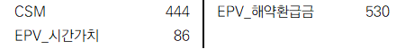
- 예상만기환급금 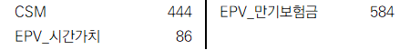
- 예상사망보험금 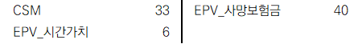
- 예상사업비 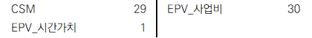
- 보험료 수취
- 변동수수료접근법 회계처리
- 예상보험료
- 예상해약환급금
- 예상만기환급금
- 예상사망보험금
- 예상사업비
- 보험료 수취
- 일반모형과 변동수수료접근법의 최초인식시점 측정 및 회계처리 동일
2. 1차년도 말
일반모형 회게처리
- 시간가치 감소_해약환급금

- 시간가치 감소_만기환급금 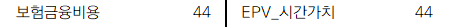
- 시간가치감소_사망보험금 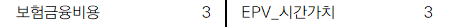
- 시간가치감소_사업비 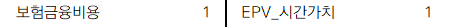
- 해약환급금 지급
.png)
- 사망보험금 지급 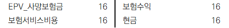
- 사업비 지급

- CSM 이자부리 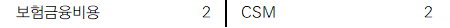
- CSM 상각 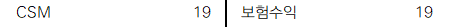

- 변동수수료접근법 회계처리
- 기초항목 공정가치 변동은 보험금융비용 인식하는 것이 원칙이며, 기초자산의 투자수익에 해당하는 금액을 비용으로 인식하여 회계 불일치를 제거(당기장부수익률법)
- 변동수수료접근법에서는 CSM 이자부리를 수행하지 않음
- 변동수수료의 변동은 문단 B110~B113을 적용하여 기초항목의 공정가치 중 기업의 몫에 해당하는 금액의 변동과 기초항목에서 발생하지 않은 화폐의 시간가치 및 금융위험 효과의 변동은 보험계약마진에서 조정함. 다만, 문단 B114에서는 기업이 보험계약마진에 대한 개별 조정을 별도로 식별하지 않고 이들을 합산할 수 있도록 허용하며, CSM 조정을 유발하는 별도의 이행현금흐름 변동이 없으므로 보험계약마진의 순 조정액을 기초항목의 공정가치에서 화폐의 시간가치와 금융위험 효과 및 그 변동과 관련된 이행현금흐름을 반영한 순액으로 추정 가능함.
- 회계처리
- 자산 공정가치 변동
- 기초항목 공정가치 변동 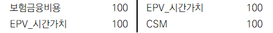
- 시간가치 감소_해약환급금

- 시간가치 감소_만기환급금 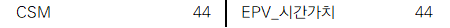
- 시간가치 감소_사망보험금 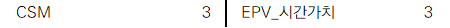
- 시간가치 감소_사업비 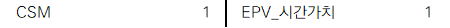
- 해약환급금 지급
- 사망보험금 지급

- 사업비 지급 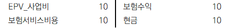
- CSM 상각 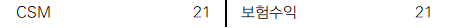

- 일반모형의 CSM 기말잔액은 37, 변동수수료접근법의 CSM 기말잔액은 41이며, 이는 후속측정 시 일반모형과 변동수수료접근법에서 CSM 조정금액과 상각기준금액의 차이에 기인함
3. 재무제표
- 1차년도와 동일한 방식으로 2차년도와 3차년도의 회계처리를 수행하여 재무상태표와 손익계산서 작성
- 재무상태표

- 손익계산서